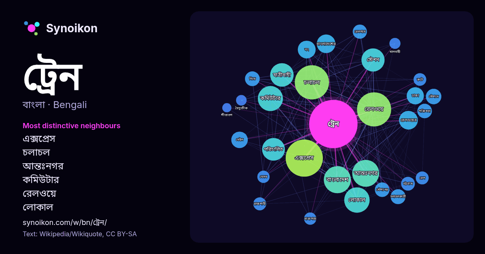

বাংলা · আজকের শব্দের তালিকা
ট্রেন
“train” · উইকিপিডিয়া, Wikiquote থেকে 1219টি প্রয়োগে এর চারপাশে পাওয়া শব্দ।

সবচেয়ে স্বতন্ত্র প্রতিবেশী
- এক্সপ্রেস 151×
- চলাচল 112×
- আন্তঃনগর 106×
- কমিউটার 95×
- রেলওয়ে 93×
- লোকাল 91×
- যাত্রীবাহী 78×
- রেলওয়ের 53×
- মেইল 42×
- স্টেশন 39×
- চলাচলকারী 38×
- নিম্নে 36×
- স্টেশনে 32×
- বাংলাদেশ 32×
- রেলপথে 31×
- স্টেশনের 28×
- পরিচালিত 27×
- রুটে 27×
- যাত্রাপথে 26×
- নং 24×
× = সাধারণ উইকিপিডিয়া টেক্সটের চেয়ে কত গুণ বেশি।
সবচেয়ে ঘন ঘন প্রতিবেশী
- এক্সপ্রেস 248
- চলাচল 211
- রেলওয়ে 210
- বাংলাদেশ 132
- আন্তঃনগর 130
- লোকাল 116
- কমিউটার 113
- যাত্রীবাহী 99
- স্টেশন 96
- পরিচালিত 93
- রেলওয়ের 63
- বাংলাদেশের 62
- নং 57
- ঢাকা 53
- মেইল 49
- স্টেশনে 43
- চলাচলকারী 40
- নিম্নে 39
- উল্লেখ 38
- পরিষেবা 38
প্রসঙ্গে
- রেলপথের উপর চলে। ট্রেন শব্দটি প্রাচীন ফরাসি শব্দ ট্রাহিনার থেকে এসেছে, যা ল্যাটিন শব্দ ট্রাহিয়ার থেকে উদ্ভূত (অর্থ টানা, টেনে আনা)। ট্রেন যে সমান্তরাল ধাতব Wikipedia snippets · রেলগাড়ি
- সিগন্যালগুলো [সংকেতগুলো] যথাযথভাবে পর্যবেক্ষণ না করে ট্রেন পরিচালনার কারণে এ দুর্ঘটনা সংঘটিত হয়। "কসবায় ট্রেন দুর্ঘটনা: তূর্ণা নিশীথার লোকোমাস্টারসহ ৩ জন দায়ী"। Wikipedia snippets · মন্দবাগ ট্রেন সংঘর্ষ
- আন্তঃনগর ট্রেন বা আন্তঃনগর রেল বা ইন্টারসিটি ট্রেন হল এক্সপ্রেস যাত্রীবাহী ট্রেন পরিষেবা যা কমিউটার ট্রেন ও লোকাল ট্রেনের চেয়ে দীর্ঘ দূরত্ব অতিক্রম করে। Wikipedia snippets · আন্তঃনগর ট্রেন
- এক্সপ্রেস ট্রেন হল এক ধরনের যাত্রীবাহী ট্রেন যা তার উৎপত্তিস্থল এবং গন্তব্য স্টেশনগুলির মধ্যে অল্প সংখ্যক যাত্রাবিরতি দেয়। মেইল ট্রেন ও এক্সপ্রেস ট্রেনগুলি Wikipedia snippets · এক্সপ্রেস ট্রেন
- রেলওয়ে জোনের মোট পৃথক পৃথক ৩৫৭২ টি যাত্রীবাহী ট্রেন চলছে । পশ্চিম ভারত থেকে এই দেশের প্রথম যাত্রীবাহী ট্রেন, যা বোম্বাইয়ের (বর্তমানে মুম্বাই) বোরি বন্দর Wikipedia snippets · ভারতের ধীর ও দ্রুত যাত্রীবাহী ট্রেন
- মেইল ট্রেন বা মেল ট্রেন হচ্ছে রেল পরিবহনের একটি যাত্রীবাহী পরিষেবা। মেইল ট্রেনের উদ্ভব হয়েছিলো ডাক বিভাগের সাথে সমন্বয় করে। ১৯শতকে মেইল ও এক্সপ্রেস ট্রেনের Wikipedia snippets · মেইল ট্রেন
- ষড়যন্ত্র বা কাকোরি ট্রেন ডাকাতি (ইংরেজি: Kakori Revolution বা Kakori Conspiracy বা Kakori train robbery বা Kakori Case), হচ্ছে একটি ট্রেন ডাকাতি যেটি লক্ষ্ণৌ-এর Wikipedia snippets · কাকোরি বিপ্লব
- আঞ্চলিক ট্রেন, কমিউটার ট্রেন এবং আন্তঃনগর ট্রেনের মধ্যে একটি পরিষেবা শ্রেণিবিভাগ হিসাবে স্বীকৃত নয়। পরিষেবাগুলি কেবলমাত্র ভারী ট্রেন এবং হাল্কা ট্রেন হিসেবে Wikipedia snippets · আঞ্চলিক রেল
আরও শব্দ
- অরণ্য
- আয়না
- ইতিহাস
- ঈশ্বর
- কাজ
- কুকুর
- ক্ষমতা
- খাদ্য
- গান
- গ্রীষ্ম
- ঘড়ি
- ঘণ্টা
- ঘোড়া
- ছায়া
- জননী
- জলবায়ু
- জীবন
- ঝড়
- টাকা
- দারুচিনি
- দ্বীপ
- নক্ষত্র
- নীরবতা
- পরিবার
- পানি
- পাহাড়
- প্রকৃতি
- বাগান
- বিজ্ঞান
- বিড়াল
- বৃষ্টি
- ভাষা
- মধু
- মরুভূমি
- মানচিত্র
- মৃত্যু
- রাস্তা
- রুটি
- লবণ
- শরৎ
- শহর
- শিল্প
- শীত
- সত্য
- সময়
- সেতু
- সোনা
- স্বাস্থ্য
- হৃদয়
2026-10-09 তারিখে ডিফল্ট সেটিংসে (±5 শব্দ, মাঝারি কর্পাস) আগে থেকে গণনা করা। ইন্টারঅ্যাক্টিভ মানচিত্র লাইভ ডেটা দিয়ে এটি হালনাগাদ করতে পারে।
যন্ত্রে অনূদিত ইন্টারফেস; সংশোধন স্বাগত।